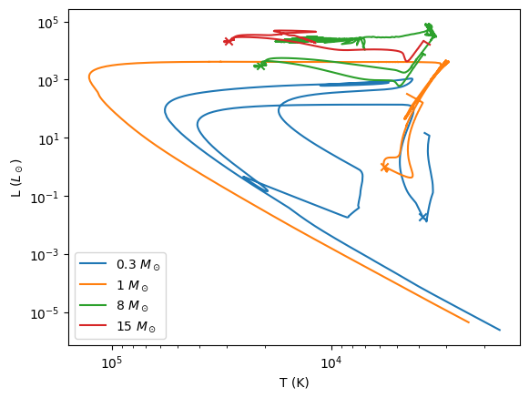
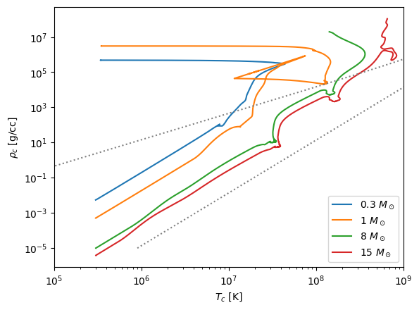
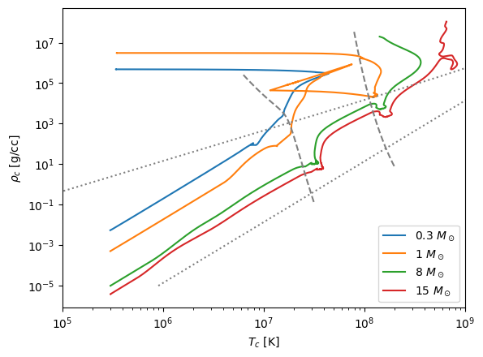
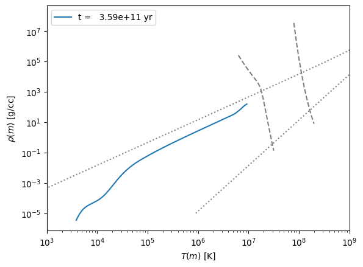
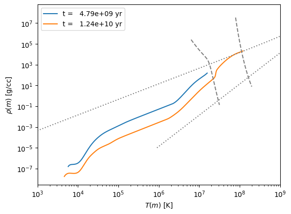
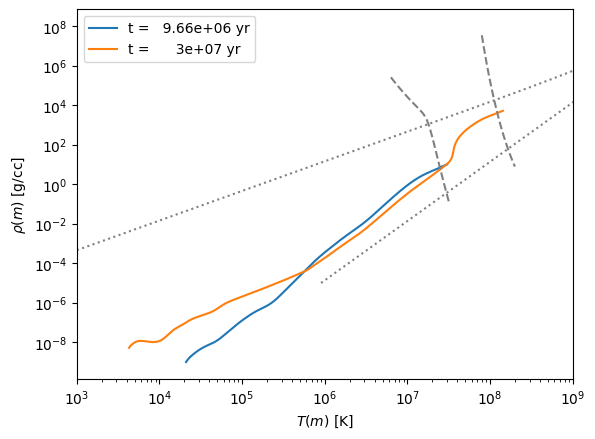
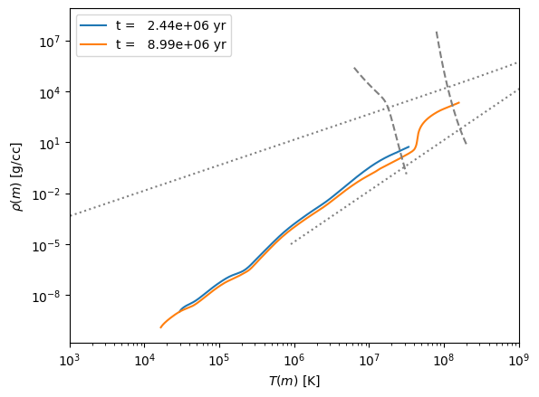

Stellar Evolution in the ρ-T Plane#
Note
This example uses the same models as the previous example. You can download them following the instructions there.
import numpy as np
import matplotlib.pyplot as plt
import mesa_reader as mr
We’ll use a simple container to hold the models to allow us to explore them.
class Model:
def __init__(self, mass, profiles=None, history=None):
self.mass = mass
if history:
self.history = mr.MesaData(history)
self.profiles = []
if profiles:
for p in profiles:
self.profiles.append(mr.MesaData(p))
Now read in all the data. For all but the lowest mass we have 2 profiles and 1 history. The profiles were picked to roughly correspond to the midpoint of core H burning and core He burning.
models = []
models.append(Model(0.3, profiles=["M0.3_default_profile8.data"],
history="M0.3_default_trimmed_history.data"))
models.append(Model(1, profiles=["M1_default_profile8.data",
"M1_default_profile218.data"],
history="M1_default_trimmed_history.data"))
models.append(Model(8, profiles=["M8_basic_co_profile8.data",
"M8_basic_co_profile39.data"],
history="M8_basic_co_trimmed_history.data"))
models.append(Model(15, profiles=["M15_aprox21_profile8.data",
"M15_aprox21_profile19.data"],
history="M15_aprox21_trimmed_history.data"))
HR diagram#
Let’s start by looking at the models on the HR diagram and mark the location where H burning is occuring (with an \(\times\))
fig, ax = plt.subplots()
for star in models:
ax.loglog(star.history.Teff, star.history.L,
label=rf"{star.mass} $M_\odot$")
ax.scatter([star.profiles[0].Teff], [star.profiles[0].photosphere_L], marker="x")
ax.legend()
ax.set_xlabel("T (K)")
ax.set_ylabel(r"L ($L_\odot$)")
ax.invert_xaxis()

You can see the main sequence clearly on this plot.
We also see that only the 0.3 and 1 solar mass stars “finished’ stellar evolution, winding up as a cooling white dwarf at the end – the path they follow is essentially a line of constant radius, since the white dwarf does not contract as it cools (it is degenerate).
Central evolution#
We want to plot the history of the evolution of the central conditions in the \(\log \rho\)-\(\log T\) plane.
We will plot the EOS boundary lines considered before. These functions are now in a module, regimes.py to make our life easier.
import regimes
Now we can plot the data
fig, ax = plt.subplots()
for star in models:
ax.loglog(star.history.center_T, star.history.center_Rho,
label=rf"{star.mass} $M_\odot$")
rho = np.logspace(-5, 8, 100)
ax.loglog(regimes.deg_ideal(rho, mu_e=1.3), rho, color="0.5", ls=":")
ax.loglog(regimes.rad_ideal(rho, mu=0.6), rho, color="0.5", ls=":")
ax.legend()
ax.set_xlabel(r"$T_c$ [K]")
ax.set_ylabel(r"$\rho_c$ [g/cc]")
ax.set_xlim(1.e5, 1.e9)
(100000.0, 1000000000.0)

Some observations:
The higher mass stars are closer to the line where radiation dominates.
The 0.3 and 1 solar mass stars make a transition from following \(T \approx \rho^{1/3}\) to \(\rho = \mbox{constant}\) when degeneracy kicks in.
The other stars more or less follow the \(T \approx \rho^{1/3}\) trend expected from polytropes + ideal gas.
We can also add approximate ignition curves, by setting
where we use \(\epsilon_\mathrm{min} = 10^3~\mathrm{erg~g^{-1}~s^{-1}}\).
T_H = np.logspace(6.8, 7.5, 100)
rho_H = regimes.q_H(T_H)
T_He = np.logspace(7.9, 8.3, 100)
rho_He = regimes.q_He(T_He)
ax.plot(T_H, rho_H, ls="--", color="0.5")
ax.plot(T_He, rho_He, ls="--", color="0.5")
fig

We see that the 0.3 \(M_\odot\) star never gets hot enough for He burning, while the 1.0 \(M_\odot\) star ignites He under degenerate conditions (a He flash)
Profiles#
Let’s next look at the profiles of the stars in the \(\log \rho\)-\(\log T\) plane
0.3 \(M_\odot\)#
fig, ax = plt.subplots()
for p in models[0].profiles:
ax.plot(p.T, p.Rho, label=f"t = {p.star_age:10.3g} yr")
ax.loglog(regimes.deg_ideal(rho, mu_e=1.3), rho, color="0.5", ls=":")
ax.loglog(regimes.rad_ideal(rho, mu=0.6), rho, color="0.5", ls=":")
ax.legend()
ax.plot(T_H, rho_H, ls="--", color="0.5")
ax.plot(T_He, rho_He, ls="--", color="0.5")
ax.set_xlabel(r"$T(m)$ [K]")
ax.set_ylabel(r"$\rho(m)$ [g/cc]")
ax.set_xlim(1.e3, 1.e9)
(1000.0, 1000000000.0)

1 \(M_\odot\)#
fig, ax = plt.subplots()
for p in models[1].profiles:
ax.plot(p.T, p.Rho, label=f"t = {p.star_age:10.3g} yr")
ax.loglog(regimes.deg_ideal(rho, mu_e=1.3), rho, color="0.5", ls=":")
ax.loglog(regimes.rad_ideal(rho, mu=0.6), rho, color="0.5", ls=":")
ax.legend()
ax.plot(T_H, rho_H, ls="--", color="0.5")
ax.plot(T_He, rho_He, ls="--", color="0.5")
ax.set_xlabel(r"$T(m)$ [K]")
ax.set_ylabel(r"$\rho(m)$ [g/cc]")
ax.set_xlim(1.e3, 1.e9)
(1000.0, 1000000000.0)

8 \(M_\odot\)#
fig, ax = plt.subplots()
for p in models[2].profiles:
ax.plot(p.T, p.Rho, label=f"t = {p.star_age:10.3g} yr")
ax.loglog(regimes.deg_ideal(rho, mu_e=1.3), rho, color="0.5", ls=":")
ax.loglog(regimes.rad_ideal(rho, mu=0.6), rho, color="0.5", ls=":")
ax.legend()
ax.plot(T_H, rho_H, ls="--", color="0.5")
ax.plot(T_He, rho_He, ls="--", color="0.5")
ax.set_xlabel(r"$T(m)$ [K]")
ax.set_ylabel(r"$\rho(m)$ [g/cc]")
ax.set_xlim(1.e3, 1.e9)
(1000.0, 1000000000.0)

15 \(M_\odot\)#
fig, ax = plt.subplots()
for p in models[3].profiles:
ax.plot(p.T, p.Rho, label=f"t = {p.star_age:10.3g} yr")
ax.loglog(regimes.deg_ideal(rho, mu_e=1.3), rho, color="0.5", ls=":")
ax.loglog(regimes.rad_ideal(rho, mu=0.6), rho, color="0.5", ls=":")
ax.legend()
ax.plot(T_H, rho_H, ls="--", color="0.5")
ax.plot(T_He, rho_He, ls="--", color="0.5")
ax.set_xlabel(r"$T(m)$ [K]")
ax.set_ylabel(r"$\rho(m)$ [g/cc]")
ax.set_xlim(1.e3, 1.e9)
(1000.0, 1000000000.0)
